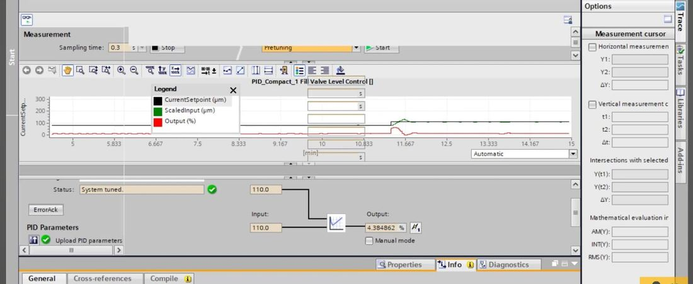
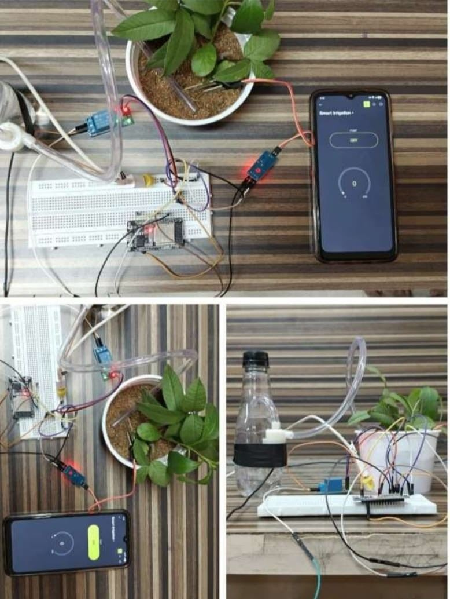
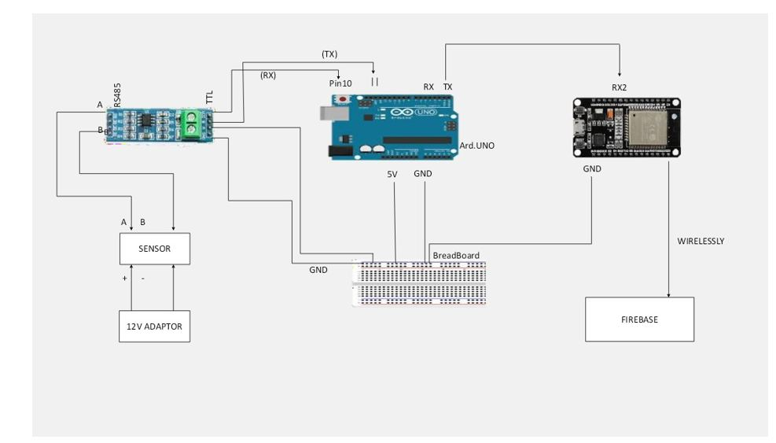
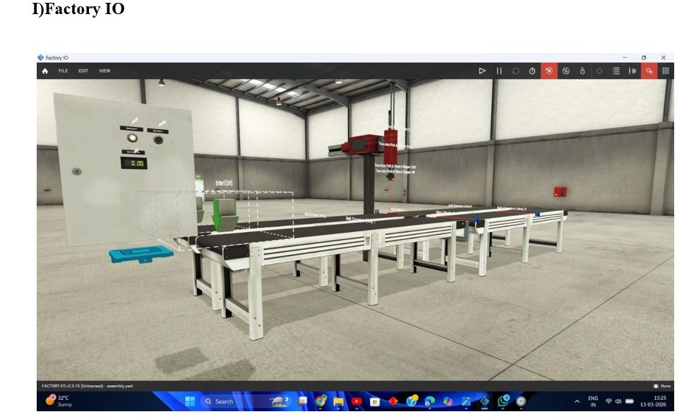
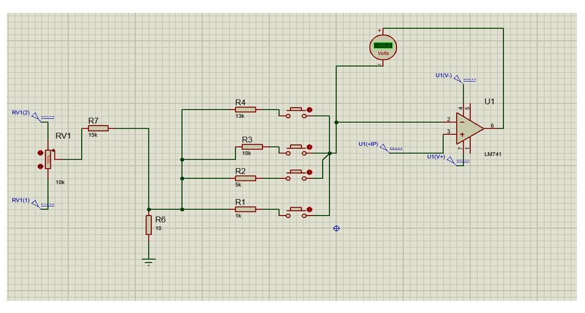
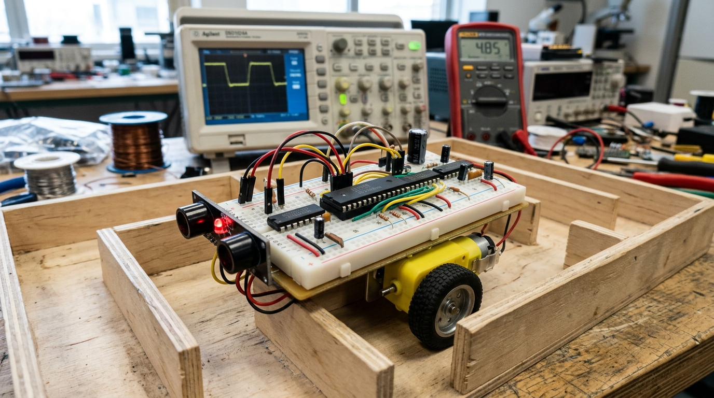

Hi, I'm Kishore Kumar A
Engineering robust hardware, closing industrial feedback loops, and building connected IoT solutions. Hands-on with STM32, ESP32, Siemens S7-1200 PLC, Factory I/O, and industrial protocols.
Bridging Embedded Intelligence & Process Control
Applying engineering rigor to industrial variables, feedback algorithms, and physical hardware validation.
Final-year EIE student at Anna University with hands-on experience in Embedded Systems, Industrial Automation, and IoT-based sensor interfacing through industrial training and multidisciplinary academic projects. Foundational knowledge in industrial process variables including temperature, flow, and pressure, and familiar with PID control and process automation. Experienced with STM32, ESP32, Siemens S7-1200 PLC, Factory I/O, and industrial communication protocols.
Embedded Systems & IoT
Firmware programming and hardware interfacing with STM32 ARM Cortex-M, ESP32, and 8051. Expertise in analog sensor signal conditioning, ADC/GPIO routing, and cloud IoT telemetry.
Industrial Automation & PID
PLC ladder logic programming on Siemens S7-1200, 3D simulation in Factory I/O, closed-loop PID tuning, tag-based communication drivers, and SCADA/HMI visualization.
Hardware Design & Protocols
Full hardware lifecycle from schematic capture to PCB assembly (THT/SMT), Design Analysis Reports (DAR), DC-DC converters, and industrial protocols (HART, Modbus, CAN).
Industry Training & Practice
Hands-on exposure to standard industrial development workflows, design validation, and manufacturing documentation.
Embedded Hardware Design Intern
During this 5-week internship, I worked through the practical side of embedded hardware development — schematic design, PCB assembly across both through-hole and surface-mount technology, hardware validation, and testing methodologies. This included hands-on exposure to Design Analysis Reports, component selection, PCB defect analysis, I²C-based sensor interfacing, and DC-DC converter design, along with generating BOMs and netlists as part of the standard documentation workflow.
Featured Engineering Projects
From closed-loop digital twin simulations and IoT agricultural controllers to discrete digital logic robotics.

Digital Twin for Level Process
Built a virtual digital twin of an industrial single-tank level process using a physical Siemens S7-1200 PLC and Factory I/O. Enabled safe closed-loop PID tuning, bidirectional tag synchronization, and real-time trend validation in TIA Portal without risk to live equipment.

IoT Soil Moisture Monitoring & Pump Control
Dual-mode smart irrigation system pairing ESP32 with an analog soil moisture sensor and relay module. Supports manual phone control via Blynk virtual button (with countdown timer) and fully automated threshold-based irrigation, validated on a live potted plant.

Smart Crop Prediction & Monitoring (STM32 & ESP32)
Precision agriculture platform using STM32, ESP32, and an 8-in-1 soil sensor for real-time soil and environmental parameter acquisition. Integrates long-range wireless telemetry and Machine Learning models to deliver optimal crop and fertilizer recommendations.

Automated Assembly & Quality Check Station
Simulated an automated industrial cell in Factory I/O with parts assembly, optical alignment inspection, and sorting into accept/divert streams driven by sequential Control I/O logic and live tracking counters.

Multi-Range DC Voltmeter Circuit (LM741)
Designed and assembled a non-inverting op-amp voltmeter with 4 switchable gain ranges (1V, 5V, 10V, 13V) selected via rotary switch. Calibrated against a precision power supply, achieving tight error bounds between 0.82% and 1.13%.

Maze Solver Robot using Digital Logic
Autonomous mobile robot navigating entirely via combinational Boolean logic (without microcontrollers or software). Derived truth table states from 2 IR sensors to drive an L293D motor driver and dual DC motors across 4 distinct obstacle avoidance behaviors.
Skills & Technology Matrix
Tools, hardware platforms, software utilities, and communication protocols mastered across coursework and projects.
Programming
Hardware Controllers
Communication Protocols
Software & Simulation Utilities
Education & Core Coursework
Strong engineering foundation in Electronics & Instrumentation Engineering from Madras Institute of Technology (MIT), Anna University.
Madras Institute of Technology (MIT), Chrompet
Specialized Certifications
Recognized national skill development programmes and competitive certifications in micro-sensors, PLC automation, and EV Battery Management.
A Brief Introduction to Micro-Sensors
Elite Silver Certificate (85%), ranked among the Top 5% of course participants nationwide. Covered applications of MEMS in precision pressure measurement, micro-machining, and accelerometers.
View Verified CertificateIndustrial Automation Using Siemens PLC & HMI
Hands-on exposure to Siemens S7 PLC, HMI screen engineering, and the basics of PLC programming — knowledge that fed directly into building the Digital Twin for Level Process project.
View Verified CertificateApplication of AI in Smart BMS for EV
Covered what a Battery Management System is and where it's applied, how State of Charge (SOC) and State of Health (SOH) are estimated using Kalman filters, and autonomous vehicles basics.
View Verified CertificateProfessional & Student Organizations
Active involvement in international technical societies and community volunteering initiatives at MIT.
Let's Connect & Build Something Great
I am open for full-time roles, internships, and collaborative opportunities in Embedded Hardware Design, Firmware Engineering, and Industrial Process Automation.
Direct Messaging
Reach out directly on WhatsApp or Email for immediate response regarding internships or project discussions.